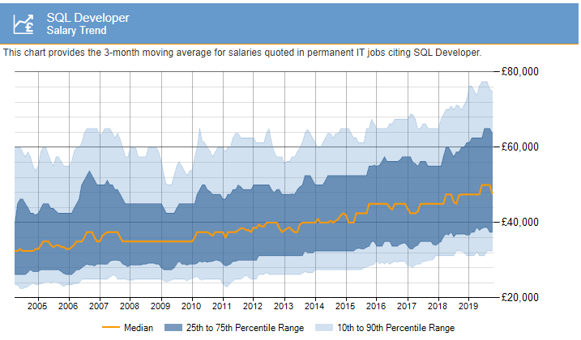

~ Lesson 2 ~
SQL Introduction
- In 1974, Don Chamberlin and Ray Boyce settled on the language they called Structured Query Language, also called SQL, after trying to implement a research idea of their coleague, Edgar Codd, on working with data.
- SQL - Structured Query Lanugage is a domain-specific language used in programming and designed for managing data held in a relational database management system, or for stream processing in a relational data stream management system.
- SQL is a Declarative Language - users specify what they want, not how the computer (or DBMS) should get them. It is like ordering a meal versus develop (and follow) a recipe to cook the meal.
- Effective Data Mining
Learning SQL will allow you to mine data with greater efficiency. Using basic queries you can identify specific data at time intervals, view update events, monitor table activity, and much more.
- Improved Data Manipulation
SQL is particularly effective at data manipulation. Because it allows you to see the exact data and how it works, you’ll have an easier time testing and manipulating the data. Furthermore, data stored in SQL is dynamic, meaning it can me modified and manipulated at any time using some basic queries.
- Easily Combining Data from Multiple Sources
Combining data from two or more sources can be time-consuming and downright daunting task. However, SQL makes the process a breeze by supporting simple “merges” in which the specified fields or entire databases are combined.
- Practical Management of Humongous Data
Traditional spreadsheets can be used to manage small-to-medium-sized pools of data, but you’ll need a different solution when handling excessively large records. Thankfully, this is an area in which SQL shines: whether it’s 1,000 records or 100 million, SQL is fully equipped to manage datapools of virtually all sizes.
- Simple Troubleshooting
SQL is one of those programming languages in which you can easily troubleshoot the issues. For example, if there is a syntax error, then the error which is displayed clearly shows what is missing in the command which you have used, or what is misspelled or if any indicator is mentioned at the wrong place. Apart from this, if you are trying to use a database or a table that does not exist, the error displays that the database or the table does not exist.
- Better Server Management with Databases
If you plan on managing servers, or creating your own server, SQL programming language will most certainly prove useful. Many servers use databases like MySQL or SQL Server to, well, store data. By familiarizing yourself with SQL and its respective queries, you can easily navigate through the otherwise confusing web of datasets.
- High Paying Jobs and High Demand for SQL Programmers
- Consider the below graph for the SQL Developer salary trend 
- Apart from the salaries, SQL skills are in high-demand because almost every technical role requires an understanding of SQL. It could be any industry like Finance, Accounting, Web Development, Digital Marketing, etc.. According to the job posting website Indeed.com, there are more SQL programming jobs (in 2019) than any other type of programming language, including Java, JavaScript, C+, Python, C++, and PHP.
- DDL - Data Definition Language
- When you design your database, you set up different tables for different kinds of data. There are simple commands or statements to create a table, change what types of records that table will hold, or discard the table from your database
- The SQL commands for these are, simply enough, CREATE, ALTER, and DROP, respectively
- These commands cover the activity of designing, or more accurately defining, your database, and together they form a category of SQL commands called Data Definition Language or DDL.
- DML - Data Manipulation Language
- You might want to add records to tables, change some of the data in those records, and remove records. The SQL commands for those actions are INSERT, UPDATE and DELETE.
- They form the SQL category of Data Manipulation Language or DML.
- DML - Data Query Language
- Of course, once you set up your tables and then put some data into your database, you can do one of the main things people do with data: you can ask questions about it.
- The SELECT statement is the superstar of the SQL commands. It is the one command in SQL for asking questions and getting answers out of your database.
- The SELECT statement is so important that it has its own category all by itself: the Data Query Language category or DQL.
- DCL - Data Control Language
- Finally, to have different users with different roles use your database, you can use the SQL statements GRANT and REVOKE in the category of Data Control Language or DCL.
- The GRANT statement is to create a user account or give a user certain privileges in your database
- The REVOKE statement can remove a privilege that was previously granted.
- Now you know the four general types of database activities in the basic SQL commands for them. The order of the statements given here has some meaning.
- You must create a table (DDL) before you can put any data into it (DML) or give access to different users (DCL), and once you put data into the table, you can query it (DQL).
- In terms of how often you will use these statements, it's a different order.
- SELECTs or DQL statements are what you will do the most often by far. DML statements take second place, and DDL and DCL maybe fairly rare.
Below are some of the most used database engines
- Oracle
- Postgres, MySQL
- SQLite
- Ingres, Informix (Unix)
- DB2, SQL/DS (IBM)
- Access, SQL Server (Microsoft)
- Some old engines: Pick, Universe, D3, IMS, etc.
- Speaking of different commands, there's a twist on SQL itself. The worldwide engineering community has developed a standard for SQL. SQL has evolved and grown over the years, and so the "official standard" has been revised and republished several times. However, almost no commercial vendor actually implements standard SQL exactly, 100 percent.
- So, we really have different SQL dialects for different software programs. Although most SQL systems are at least 90 or 95 percent alike, every system will have its own peculiar dialect, with some small differences in the exact commands that are available, or some optional details in the commands.